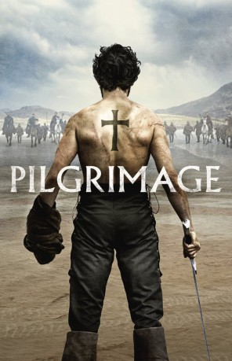
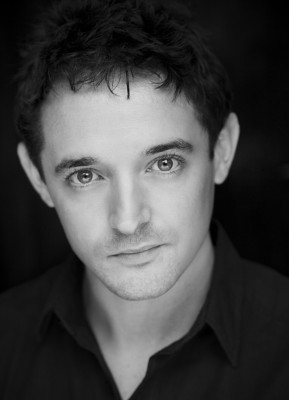

#9251 Gottes Wege sind blutig
Alternativ: Pilgrimage
 
 IMDB-Wertung: 5.8 / 10
IMDB-Wertung: 5.8 / 10  Metascore: 60
Metascore: 60 
Pilgrimage beginnt im Irland des 13. Jahrhundert: Obwohl das Reisen in diesen Zeiten keinesfalls sicher ist, verlassen ein paar Möche ihr Kloster in Irland. Ihre Aufgabe ist es, auf einer Pilgerreise bis nach Italien zu gelangen. Doch der lange Weg dient, wie bei so vielen anderen Gläubigen, nicht nur der Festigung ihrer Bindung zu Gott und Kirche oder einer Sündenvergebung, sondern hat noch ein anderes Ziel: Die Gottesmänner haben nämlich ein wertvolles Gut im Gepäck. In Rom sollen sie das allerheiligste Relikt ihres Klosters abliefern. Während ihrer gemeinsamen Reise haben die Mönche mit einer Vielzahl an Gefahren zu kämpfen. Aber während es zunächst ihr fester Glaube ist, der sie zusammenhält, wird dieser mit den zurückgelegten Kilometern auch zunehmend zu dem Faktor, der die Gruppe zu zerreißen droht.
Jahr: 2017
Dauer: 96 Minuten
FSK: 16
Land: Irland Studio: Universal PicturesTonspuren:
Untertitel:
Auflösung: 1080p (1920x800) Größe: 4945 MB
Genre: Thriller, Drama, Abenteuer, Mystery
Regisseur: Brendan Muldowney
Drehbuch: Jamie Hannigan
Soundtrack: Stephen McKeon
Darsteller:
- Nikos Karathanos als Saint Matthias
- Akilas Karazisis als The Killer
 Tom Holland als Brother Diarmuid - The Novice
Tom Holland als Brother Diarmuid - The Novice Jon Bernthal als The Mute
Jon Bernthal als The Mute John Lynch als Brother Ciarán - The Herbalist
John Lynch als Brother Ciarán - The Herbalist- Rúaidhrí Conroy als Brother Rua
-  Hugh O'Conor als Brother Cathal
 Stanley Weber als Brother Geraldus - The Cistercian
Stanley Weber als Brother Geraldus - The Cistercian- Peter Cosgrove als Gaelic Warrior
 Lochlann O'Mearáin als Lopsided
Lochlann O'Mearáin als Lopsided Richard Armitage als Raymond De Merville
Richard Armitage als Raymond De Merville- Tristan McConnell als Dugald
 Eric Godon als Baron De Merville
Eric Godon als Baron De Merville- Tony Condren als Wolf Head
- Diarmuid de Faoite als The Captain
- Jean Law als Celtic Woman (uncredited)
- Donncha Crowley als The Abbott
- David O'Reilly als Greybeard
- Gaëtan Wenders als Fournier
- Eoin Geoghegan als Red Beard - Crovderg
- Gary Byrne als The Mate
- Padraig O'Toole als Norman Soldier (uncredited)
Datei: X:\2017(G-M)\Gottes Wege sind blutig (2017, FSK16, 1920x800).mkv seit 20.07.2018
Festplatte: HD 2017(A-Z)-2018(A-F)
 Es gibt insgesamt 148 Filme in der Gruppe '2017(G-M)'
Es gibt insgesamt 148 Filme in der Gruppe '2017(G-M)'